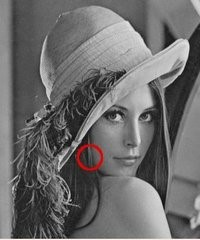
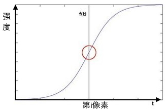
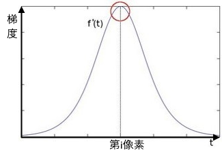
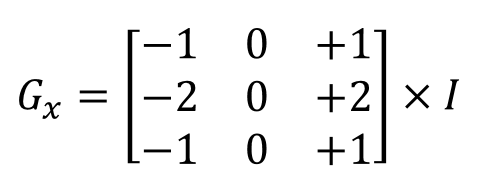
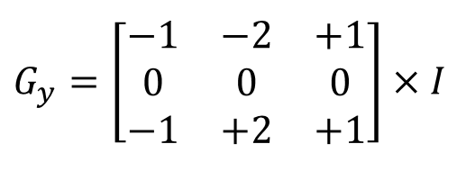
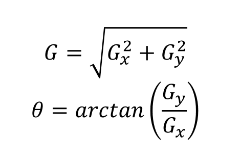

Canny边缘检测器
由John F. Canny在1986年开发。Canny算法也被称为最佳检测器(optimal detector)，旨在满足三个主要标准：
- 低错误率：意味着仅存在边缘的良好检测。
- 良好的定位：必须将检测到的边缘像素与实际边缘像素之间的距离最小化。
- 最小响应：每个边缘只有一个检测器响应。
原理
- 使用高斯滤波图像
- 找到图像的强度梯度。为此，我们遵循类似于Sobel的过程：
索贝尔 (Sobel) 算法理论
图像中所有像素其实也就是个二维的离散函数，那么我们将它求导会得到什么？
假设我们要检测图像中存在的边缘。例如：

可以轻松地注意到，在边缘处，像素强度以急速的方式变化。表达变化的好方法是使用导数。
假设我们有一个1D图像。像素值的迅速变化部分就是图像中的边缘。

求一阶导数：

假设要操作的图像是I
计算两个导数：
- 横向变化：
通过将I与奇数大小的内核𝐺𝑥卷积来计算。例如，内核大小3，𝐺𝑥计算为：

-
纵向变化：
通过将I与奇数大小的内核𝐺𝑦卷积来计算。例如，内核大小3，𝐺𝑦计算为：

在图像的每个点上，我们通过结合以上两个结果来计算该点的梯度近似值：

- 方向舍入为四个可能的角度之一(即0、45、90或135)。
- 应用非最大抑制。这将删除不视为边缘一部分的像素。因此，将仅保留细线(候选边缘)。
- 最后一步：迟滞。Canny使用两个阈值(Upper和Lower)：
- 如果像素梯度高于上限阈值，则该像素被接受为边缘。
- 如果像素梯度值低于下阈值，则将其拒绝。
- 如果像素梯度在两个阈值之间，则仅当它连接到高于上限阈值的像素时才被接受。
- Canny建议使用2:1到3:1的上/下比例。
例子
#include <opencv2/opencv.hpp>
using namespace cv;
int th1 = 50, th2 = 50;
int main()
{
// 从默认相机获取图像
VideoCapture capture(0);
namedWindow("paras",0);
createTrackbar("th1", "paras", &th1, 500);
createTrackbar("th2", "paras", &th2, 500);
Mat frame, cannyImg;
while(1)
{
capture >> frame;
cvtColor(frame, frame, CV_BGR2GRAY);
Canny(frame, cannyImg, th1, th2);
imshow("frame", frame);
imshow("cannyImg", cannyImg);
if(waitKey(1) == 'q')
break;
}
return 0;
}